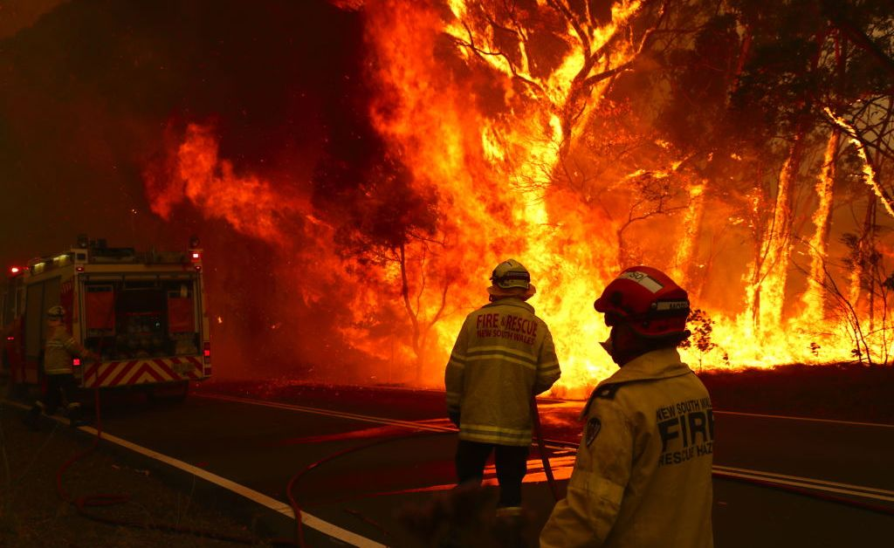

Bushfires in Australia impact extensive areas and cause property damage and have accounted for the deaths of over 800 people in Australia since 1851, and millions of animals. A small amount of Australia's native flora have evolved to rely on bushfires as a means of reproduction – for example grass trees following fire duress will send up large flower spikes to assist in procreation of the species, however the mother plants usually die off the following season – and fire events were in the past an interwoven part of the ecology of the continent. For thousands of years, Indigenous Australians have used fire to clear grasslands for hunting and to clear tracks through dense vegetation, however this was only in periods of high rainfall and in very small grassland zones bordering desert. The food thus gained provided much needed protein to nomadic tribes.
Major firestorms that result in severe loss of life are often named based on the day on which they occur, such as Ash Wednesday and Black Saturday. Some of the most intense, extensive and deadly bushfires commonly occur during droughts and heat waves, such as the 2009 southeastern Australia heat wave, which precipitated the conditions during the 2009 Black Saturday bushfires in which 180 people died. Other major conflagrations include the 1851 Black Thursday bushfires, the 2006 December bushfires and the ongoing 2019-20 bushfires.
| Name or description | State(s) / territories | Area burned (Approx.) |
|---|---|---|
|
|
|
| 52 more rows |
New South Wales and Victoria
as we face some of the most dangerous and catastrophic bushfires our nation has ever seen. We’re also seeing destructive fires raging in South Australia.Web Technology(CE247)